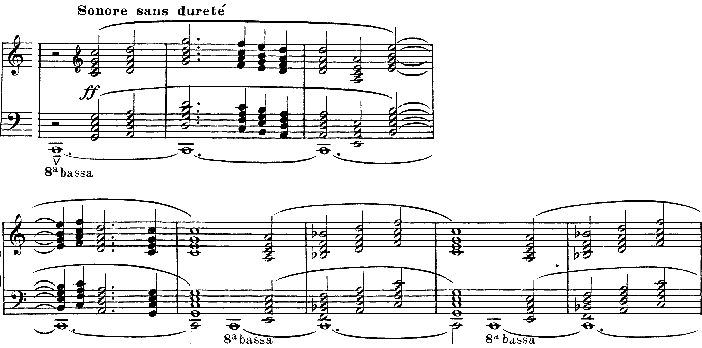

La regola completa in tre punti, l’unisono, un procedimento di controllo in quattro passi da applicare a ogni esercizio, e un contrappunto di undici note scritto, controllato e cantato.
Le leggi della morale sono anche quelle dell’arte.
Robert Schumann, Regole di vita musicale, 1850
B6Tonica e dominante. MI♭ maggiore e DO minore, pp. 162–165
Sezione B, unità 6, lezioni 20 «Il moto parallelo nascosto» e 21 «Il moto parallelo sincopato». La regola sulle parallele è enunciata alla lezione 17 (pp. 156–157).
1. Fra due voci non si succedono due consonanze perfette dello stesso tipo: due quinte, due ottave, due unisoni.
2. Una consonanza perfetta si raggiunge per moto contrario, mai per moto retto: la nascosta (lezione 4) è un errore. In prima specie il moto obliquo non si presenta, perché non ci sono note ripetute.
3. Terze e seste parallele sono ammesse, ma «in generale sarà bene non usarne più di tre di seguito» (Salzer – Schachter, Contrappunto e composizione, § 1.2.10, p. 19).
L’unisono vale come l’ottava, ed è il caso estremo: due voci all’unisono che si muovono insieme sono una parte sola cantata da due persone. In prima specie sta solo all’inizio e alla fine: a metà «può dare l’impressione che una delle due parti sia improvvisamente scomparsa oppure, se cade sulla tonica, che l’esercizio sia già finito» (§ 1.2.11, p. 19).
«Ben diverso è il discorso dell’alternanza fra quinte e ottave che […] può dar luogo a una logica ed elegante condotta delle parti» (Salzer – Schachter, § 1.2.12, p. 20). La regola vieta la coppia dello stesso tipo e la perfetta raggiunta per moto retto, non la vicinanza di due perfette.
1. Sotto ogni battuta si scrive il numero dell’intervallo, ridotto entro l’ottava: una dodicesima vale 5, una quindicesima 8, l’unisono 1.
2. Si cerchiano gli 1, i 5 e gli 8: in otto battute sono di norma tre o quattro.
3. Per ogni cerchio si guarda il numero precedente: se è uguale, e le voci si sono mosse, è una successione parallela.
4. Per ogni cerchio si guarda come ci arrivano le voci: se si muovono tutte e due nella stessa direzione, è una nascosta.
Fermarsi al passo 3. Nell’esempio il numero prima dell’8 della b. 2 è un 5, diverso: il passo 3 non vede nulla, e l’errore lo trova soltanto il passo 4. Per ultima si ricontrolla la chiusa (lezione 2): sesta maggiore, poi ottava o unisono.
Prima di ascoltare, i quattro passi sulla carta: gli otto numeri, i cerchi, poi i tre errori, ciascuno con la battuta e il passo che lo ha trovato. Poi un ascolto, per sentire dove le voci diventano una. Infine si riscrive il contrappunto cambiando soltanto le note che servono: il canto dato non si tocca.
Su due righi, con le note incolonnate, scrivere sopra il canto dato un contrappunto di prima specie: inizio e fine sull’ottava, chiusa con la sesta maggiore (lezione 2); solo consonanze, nessuna nota ripetuta, nessun incrocio, unisono soltanto agli estremi; i tre punti della regola; un solo culmine, in una battuta diversa da quella del canto dato.
I quattro passi, sul proprio quaderno. Ogni errore si corregge modificando la voce superiore, mai il canto dato. I numeri restano scritti sotto le battute: alla correzione si guarda anche il controllo.
Come alla lezione 4, con il contrappunto di oggi: uno canta il canto dato, l’altro il contrappunto, poi si scambiano ruoli e quaderni. Ogni battuta in cui una voce sembra sparire si confronta con i numeri scritti sotto: se lì c’è un cerchio, si rifanno il terzo e il quarto passo e si cambia la nota del contrappunto.
Il canto conferma con l’orecchio quello che i numeri segnalano sulla carta: dove c’è un errore fra perfette, una delle due voci si perde.
«La regola che proibisce quinte e ottave parallele rimane un principio fondamentale della condotta delle parti dal Rinascimento fino a quasi tutto l’Ottocento»; e «quinte e ottave ricorrono frequentemente anche nella musica medioevale e in quella post-romantica» (Salzer – Schachter, § 1.2.8, p. 18). Il contrappunto di specie appartiene al primo linguaggio: negli esercizi una parallela è un errore.
Nell’organum a quattro parti del XII–XIII secolo «non esistono regole per il moto delle parti: si possono trovare sia unisoni che ottave parallele» (D. de la Motte, Il contrappunto, p. 29). Accordi paralleli tornano in Debussy, nella Cathédrale engloutie (1910).
Seguire la voce più acuta degli accordi e indicare se si sentono otto voci indipendenti o una sola melodia raddoppiata in accordi. Poi spiegare perché, in questo brano, le quinte e le ottave parallele non sono un errore.

Ogni nota del canto porta con sé la propria triade, e tutte le voci si muovono insieme: le quinte e le ottave parallele fra tutte le parti sono il colore cercato, non un difetto di condotta. Il criterio che fonda la regola, tenere distinte le voci, qui non è in gioco. Anche i due accordi tenuti e ribattuti di Schönberg, op. 19 n. 6 (1911), agiscono come timbri, non come incontri di voci indipendenti.
Concludere che la regola è arbitraria perché Debussy non la segue. Una regola di stile dice che in un certo linguaggio un procedimento non si usa, non che sia sbagliato in assoluto; negli esercizi di prima specie il linguaggio è quello in cui la regola vale.
Secolo XIV — i trattati del contrapunctus formulano il divieto di procedere per consonanze perfette parallele, accanto ad altre norme pratiche.
1558 — Gioseffo Zarlino, Le istitutioni harmoniche: la materia diventa un sistema.
1725 — Johann Joseph Fux, Gradus ad Parnassum: le cinque specie, il metodo seguito in questo corso, «accolto dai musicisti del Settecento come un’opera veramente straordinaria» e «utilizzato e tenuto in grande considerazione anche da Haydn, Mozart e Beethoven» (Salzer – Schachter, Introduzione, p. XXX).
Fux codifica nel 1725 lo stile di Palestrina, già lontano di oltre un secolo e mezzo: le specie nascono come palestra didattica. De la Motte le definisce «la brillante idea di Fux, contemporaneo di Bach», ma le giudica inadatte all’analisi della polifonia di Josquin e di Bach (Il contrappunto, p. 22).
Si scrive in un linguaggio storico per educare l’orecchio ai rapporti fra le voci; il linguaggio proprio viene dopo.
Cinque affermazioni sulla regola e sul controllo. Attenzione a quelle che sembrano ovvie: metà sono false per un motivo preciso.
Nessuna successione di due consonanze perfette dello stesso tipo: quinte, ottave, unisoni. Nessuna consonanza perfetta raggiunta per moto retto. Terze e seste parallele: al massimo tre di seguito. Unisono soltanto all’inizio e alla fine.
Numeri sotto le battute (12ª = 5, 15ª = 8, unisono = 1); cerchio su 1, 5 e 8; per ogni cerchio, il numero precedente e il moto con cui ci si arriva; per ultima, la chiusa.
Alla lezione 7, l’Officina, il contrappunto si scrive con un procedimento in cinque passi; l’ultimo è il controllo di oggi. In fondo alla pagina, i compiti e il solfeggio di chiusura.
Compiti per la prossima volta
Il canto dato è in chiave di contralto, la minore. Scrivi sopra, in chiave di violino, un contrappunto di prima specie: dieci semibrevi.
Inizio su ottava o quinta; penultima battuta il sol♯ sopra il si (sesta maggiore); fine sull’ottava. I tre punti della regola, l’unisono solo agli estremi, un solo culmine. Poi i quattro passi del controllo, per iscritto, sotto le battute.
Sul quaderno, a matita. La foto del lavoro finito va su Classroom. Nel Workbook: apri l’esercizio C2-U2-L5-06 ↗
Compiti per la prossima volta
n. 90 e n. 91 parlato · n. 92 e n. 93 cantato · n. 94 e n. 95 ritmico
Ogni pezzo a tempo, senza fermarti: il parlato a nomi, il cantato prendendo il primo suono dalla tastiera, il ritmico battendo la pulsazione.
Scrivi la melodia sul quaderno, in chiave di violino: otto battute in 4/4, do maggiore. Il primo suono è sol. Prima il riferimento, poi tutto due volte, ogni coppia di battute due volte, il collegamento 1–4, 3–6 e 5–8, e tutto per controllare.
Il riferimento: accordo di tonica e primo suono
Il dettato · otto battute
Le sezioni (riferimento, tutto, le coppie, il collegamento) si ascoltano una per una e si ripetono quanto serve; le fasi fanno la procedura della classe, con gli annunci e le pause, da qualunque punto.
Sul quaderno scrivi in testa la sigla C2-D-U02-L5. Si corregge all’inizio della prossima lezione.
Compiti per la prossima volta
Scrivi un contrappunto di prima specie (nota contro nota) sopra il canto fermo, in do maggiore: nove battute. Comincia su una consonanza perfetta, alla cadenza la sensibile sale alla tonica, niente quinte e ottave consecutive.
Sul quaderno, con la sigla C2-CP-U02-L5 in testa; la foto va su Classroom.
Scritto: Dieci note sopra un canto dato, in la minore (Workbook, esercizio C2-U2-L5-06), sul quaderno; la foto va su Classroom. Solfeggio dal quaderno di lettura: parlato n. 90, 91; cantato n. 92, 93; ritmico n. 94, 95 (a tempo, senza fermarsi). Dettato C2-D-U02-L5 dalla pagina della lezione (sezioni da ascoltare, o le fasi della procedura guidata), sul quaderno con la sigla. Contrappunto di prima specie sul canto fermo (C2-CP-U02-L5).
In classe
A nomi, a tempo, con la mano che batte. Chi si ferma riparte dalla battuta dopo.
Apri il n. 86 nel quaderno di lettura ↗ chiave di basso · 4/4
In classe
Si prende il tono dalla tastiera, si canta insieme; poi a gruppi.
Apri il n. 87 nel quaderno di lettura ↗ chiave di violino · 3/4 · sol maggiore
Apri il n. 88 nel quaderno di lettura ↗ chiave di violino · 4/4 · fa maggiore
In classe
Tutti insieme, battendo la pulsazione. Poi a file, due battute a testa.